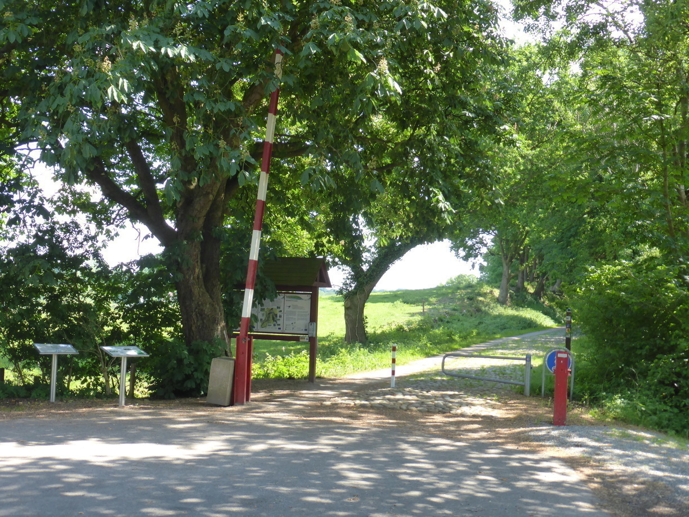

weiße Mühlen, weiße Kirchen Posted on June 7, 2016
Tag 9
Fockbek - Krusaa (Dänemark) 83 km
Bei weiterhin strahlend blauem Himmel ging es Richtung Dänemark. Dabei ging es durch Schleswig und am Ende durch Flensburg.  Es galt auch ein paar Höhenmeter zu überbrücken, da es zu den Städte immer runter zur Ostsee ging.
Es galt auch ein paar Höhenmeter zu überbrücken, da es zu den Städte immer runter zur Ostsee ging.
Zuvor hatte ich gehört, dass die Dänische Demokratische Republik die Grenzkontrollen wieder eingeführt habe. Das Navi hatte zum Glück einen wenig befahrenen Grenzübergang erwählt, an dem mich ein geöffneter Schlagbaum erwartete. 
Am Camping angekommen war ich zunächst vom deutlich erhöhten Preis geschockt. Und zudem kostet Wlan auf dänischen Campingplätzen immer Extra. Dies ist auch der Grund warum der Blog in Dänemark so wenig gepflegt wurde. An diesem ersten Platz hatte ich aber das Glück, dass ein deutscher Mobilfunkmast bis in mein Zelt strahlte.
Tag 10
Krusaa - Kolding 83 km
Am ersten Tag in Dänemark kam ich zunächst an einigen Bunkeranlagen vorbei. Diese wurden im ersten Weltkrieg von den Deutschen errichtet, da diese eine Invasion der Briten durch das neutrale Dänemark befürchteten. Kurz nach dem Krieg wurde Nordschleswig im Zuge einer Volksabstimmung an Dänemark angegliedert. 
Das Wetter an diesem Tag habe ich in folgendem Bild festgehalten. Blauer Himmel und Wind.
Eine typische dänische Kirche.
Unterwegs habe ich im Örtchen Sillerup Pause gemacht. Hier gab es eine Mühle zu bestaunen.
Die Suche nach einem Campingplatz in Kolding gestaltete sich recht einfach, da ich direkt auf der Straße, die in die Stadt führte, an einem vorbeifuhr. Außerdem bin ich kurz vorher noch an einer weiteren Mølle vorbeigekommen.